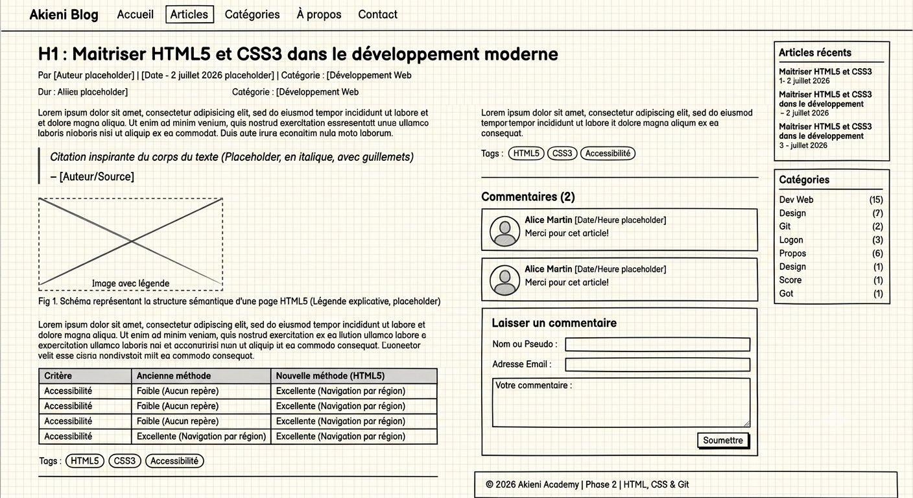

Commencer le UI/UX Design
Par Guyverna | | categorie: UX design
Peu importe si le début paraît petit.
Henry David Thoreau
Bonjour chers lecteur, dans cette article de notre blog nous allons partir à la decouverte d'un concepte très important du developpement informatique en générale. le concept dont il est question ici est ce que l'on appele un wireframe. un wireframe est un croquis qui recapitule ceux à quoi notre site ou application finale est sensée ressemblée:

est sensée ressemblée: comme vous pouvéz le voir avec l'exemple ci-dessus le wireframe ne ressemble pas exactement au site ou à l'application finale mais permet de representé les conceptes exploité dans l'aspect visuel final de notre application, il va decoulé des fruits des recherches en ament sur la psychologie de l'utilisteur final de l'application. pour cela le concepteur du wireframe doit concilier les besions et objectifs de l'application ou du produit final avec le intérets de client, de l'utilisateur de l'application cela est souvent permis par des connaissance approfondis basé sur des études sur la psychologie cognitive et le business permettant d'arriver à un resultat dont le produit peut satisfaire les besions des utilisateurs en resolvant leur problème mais aussi les interet financier des createur du produit car ce dernier a une experience utilisateur assez convainquante et consistante pour que les utilisateurs soient pret à payer pour s'en servir. dans le tableau ci-après vous trouver des ressources très utiles pour explorer d'avantage les conceptes de la psychologie cognitive.
| Livres | Auteurs | Description |
|---|---|---|
| Introduction à la psychologie cognitive | André Didierjean et Patrick Lemaire (professeur de psychologie) | Une introduction accessible aux grands concepts (perception, mémoire, raisonnement), idéale pour les étudiants débutants. |
| Manuel de la psychologie cognitive | Laure Léger | Un ouvrage complet et approfondi détaillant les théories, modèles et expériences clés de la discipline. |
commentaires (2)

Marie de Lavall
Merci pour ces informations
Jean Jacque
Avez vous de formations disponibles?